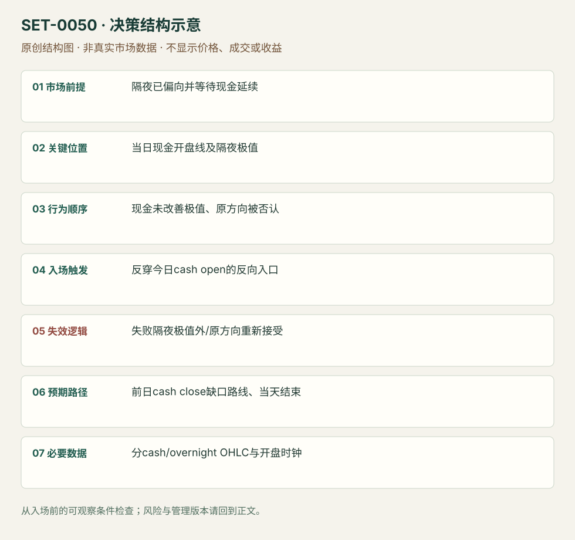

隔夜方向失败后反穿现金开盘线
Overnight-position Reversal through Cash Open · SET-0050 · reviewed · v1.0.0
盈利证据：not_established。审查范围与来源版本见第13节；未知字段保留缺失原因。
1. 名称与快速概览
隔夜交易已偏向一侧，现金开盘未能继续改善隔夜极值；价格反穿今天现金开盘线向相反方向时，交易隔夜方向失败与缺口回归。当天开盘线在决策中是独立参考。
记录口径：PA core；必要数据 overnight_OHLC、cash_open、prior_cash_close。名称性质：编辑性描述名，英文保留来源术语以便检索。reviewed 只表示本条规则与证据记录审查通过，盈利状态为 not_established。
2. 本质与行为假说
隔夜参与可能包含短期投机/对冲，但不能概括成没有大参与者。假说是延续未兑现时脆弱方向退出；观察极值失败和开盘线反穿，不假装知道实际持仓。
3. 适用市场与环境
源例DAX隔夜在前高上买，现金未续；ES文字讲对冲情境。若现金一开即持续接受更高价格，或消息确实支持新价值，不能惯性回补缺口。
来源实用市场：DAX（来源实际案例）、S&P500期货（文字情境）。
Session：DAX采用Europe/Berlin底层现金参考09:00–17:30；前后电子段单列。源图时区未明，实际迁移前需核数据商；ES文字若执行则09:30–16:00 America/New_York另立版本。
跨市场：本版不主张已经验证的跨市场迁移；更换市场必须重定数据来源、流动性与session。
4. 出现前的观察清单
明确前日现金收盘、今天现金开盘、隔夜最高/最低与是否出原范围；隔夜极值截止在现金开盘前，不能用今天未来极值。记录期货电子日与底层现金日。
5. 形成过程与状态转换
隔夜偏向/伸展 → 现金开盘检验隔夜极值 → 未改善/被拒 → 今天现金开盘线向反方向被拿走 → 隔夜方向失效 → 缺口内参考逐段处理。
6. Entry trigger 与执行方式
来源两入口是隔夜极值失败和当天现金开盘线反穿；本条主版选后者并要求先有极值失败。较早极值入口保留版本，不能与主版混算。单纯碰前日范围失败而无隔夜方向归0001。
7. Invalidation 与止损逻辑
失败隔夜尝试的已知极值外；开盘线反穿后重新被接受在原方向也否认假说。来源未给统一缓冲，本库结构硬保护为编辑执行模块。
8. Exit、target 与 trade management
前日现金收盘/缺口内阻碍为方向目标；旧价值或节点作途中参照，失败恢复即撤。所谓“straightforward gap fill”是来源期待，不当必然结果，当天计划cash session结束前平。
9. 常见 variations
上/下隔夜方向对称；极值先入与开盘线后入分版本。本条不要求成交Profile，不能用未知量数据补库存故事。
10. 失败方式与不交易条件
隔夜极值实际继续被改善；现金开盘有新价值接受；消息改变总方向；当日开盘线定义错；无隔夜偏向却每次穿开盘线都交易。
11. 与相近 setups 的区别
12. 图表与案例解读
已看DAX背景图与Profile。图能核隔夜高位尝试，完整cash-open执行片段仍缺，因此不宣称入口价和订单已验证。
- [VIS-000054] 蓝框标隔夜上行机会后受阻；全局图提供背景，未放大现金开盘反穿的实际入口。；定位：Dax Overnight Positioning。蓝框标隔夜上行机会后受阻；全局图提供背景，未放大现金开盘反穿的实际入口。 验证：chart_viewed。

本地原创示意（VIS-000107，非真实市场数据）：

小屏阅读可打开原尺寸示意图并缩放。

此图用于对照识别顺序与风险定义；不计入真实案例覆盖率。
视觉材料元数据与查看范围
- VIS-000054 · real_source_chart / context_only / chart_viewed
品种：DAX；日期：未知/不适用；周期：未知/不适用；时区：未知/不适用
日期未在图中核对；周期未在图中核对；时区未在图中核对；来源图表不是成交审计 - VIS-000107 · synthetic_structure_diagram / illustration_only / generated_not_market_evidence
品种：未知/不适用；日期：未知/不适用；周期：未知/不适用；时区：未知/不适用
无真实品种、日期或价格：这是结构示意
13. 证据、分歧与未知项
同Axia家族规则与案例解释，独立佐证有限。作者一般化的“大参与者会等待现金”未经证实，本库只保留可观察价格顺序。
- [EVD-000098] Richard Bailey，《Trading Strategy Against Overnight Positioning》，SRC-0014；定位：Trade Opportunity: failure to improve overnight extreme / opening price taken。支持：隔夜方向未在现金开盘延续；可在隔夜极值失败或反穿当天现金开盘线处逆向，向前现金收盘缺口回归。
- [EVD-000099] Axia Futures / Isaac，《Open Drive Trading Strategies》，SRC-0006；定位：ES Strategy1 overnight positioning fails at open。支持：同家族ES开盘前伸展背景与反向位置讨论，支持相关情境而非独立验证。
审查边界：来源份数与独立核心核验分开；当前类别为 limited_single_family。正文中的概念、官方事实、衍生解说或同族资料只按其支持范围使用。
14. 可用于复盘的检查表
- ☐ 下单前的前提可核对：隔夜已偏向并等待现金延续
- ☐ 事前标记位置：当日现金开盘线及隔夜极值
- ☐ 行为按顺序出现：现金未改善极值、原方向被否认
- ☐ 实际触发符合选定版本：反穿今日cash open的反向入口
- ☐ 事先写明本次否定条件：失败隔夜极值外/原方向重新接受
- ☐ 目标/路径只用当时已知信息：前日cash close缺口路线、当天结束
- ☐ 数据满足 分cash/overnight OHLC与开盘时钟；记录时间、点差、滑点、队列和未成交
- ☐ 记录截止平仓及规则偏离；正常亏损不事后改成“未成立”
15. 后续验证问题
极值失败入口和开盘线入口的差异？剔除新消息日后的样本？隔夜方向用收益或极值位置怎样定义？
双向相关导航
- SET-0020 前日低量尾部的次日回价值区 0050 以隔夜极值失败和当日现金开盘线反穿触发，不要求旧价值分布。
- SET-0001 前一交易区间突破失败后的开盘反转 0001 在前一session范围边界失败触发；本条须隔夜方向失败并反穿今天开盘线，即使仍在旧范围外也可触发。